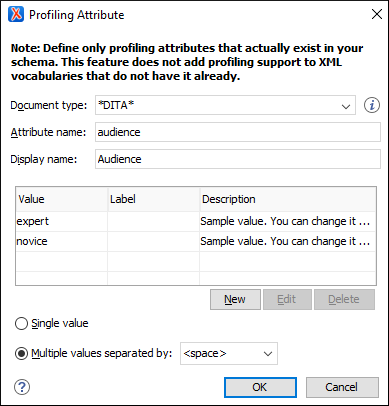

Creating and Editing Profiling Attributes in DITA
You can filter DITA content or the structure of a document by using profiling attributes or profiling conditions sets.
Defining Profiling Attributes for DITA Content
- If you are creating a new attribute, make sure the attribute is already
defined in the document DTD or schema before continuing with the procedure.Tip: For less technical users who do not want to create attribute specializations in DTD/XML Schema, you may want to use profiling attribute groups instead (use an existing profiling attribute with sub-attributes).
- Open the
Preferences dialog box and go to .Information: The Profiling Attributes section is used to define the attributes and their values. For DITA documents, the default attributes are included (
@audience,@platform,@product,@props,@otherprops, and@rev), but if a Subject Scheme Map is used for profiling your content, you will see the attributes defined in your subject scheme map instead. -
To add new attributes and values, click the New button at the bottom of the Profiling Attributes table. To customize existing attributes and their values, select an attribute and click the Edit button.
Step Result: In either case, this opens a Profiling Attribute configuration dialog box where you can define attributes that exist in your schema.
Figure 1. Profiling Attribute Dialog Box The following options are available in this dialog box:- Document type
- Select the document type (framework).Tip: You can use the
*or?wildcards in this combo box. For example,DITA*would match any document type that starts with "DITA". You can also specify multiple document types by using commas to separate them. - Attribute name
- The name of the profiling attribute.
- Display name
- This optional field is used for descriptive rendering in profiling dialog boxes.
- Attribute Values Table
-
This table displays information about the values for the profiling attribute. You can configure them by using the buttons at the bottom of the table (New, Edit, Delete).
The columns are as follows:- Value - The attribute value. You can also define
profiling attribute groups using the following format:
ParentAttrValue(SubAttrValue1 SubAttrValue2). For more information, see Conditional Profiling Attribute Groups. - Label - You can specify a label for the attribute value that will be rendered as its name in various components in Author mode (Edit Profiling Attributes dialog box, Condition Set dialog box, Profiling tab in the Edit Properties dialog box, DITA Maps Manager). If the Label is not specified, the Value will be used as its rendered name.
- Description - A description for the attribute value that will be displayed in this table.
- Value - The attribute value. You can also define
profiling attribute groups using the following format:
- Single value
- Select this option if you want the attribute to only accept a single value.
- Multiple values separated by
- Select this option if you want the attribute to accept multiple values, and you can choose the type of delimiter to use. You can choose between space, comma, and semicolon, or you can enter a custom delimiter in the text field. A custom delimiter must be supported by the specified document type. For example, the DITA document type only accepts spaces as delimiters for attribute values.
- After defining or configuring the attributes and their values according to your needs, click OK to confirm your selections and close the Profiling Attributes configuration dialog box.
- Click Apply to save the changes.
Result: You should see your changes in the Profiling Attribute table.
You can also use the Profiling Condition Sets section to apply more complex filters on your DITA content.
Adding Profiling Attribute Values Directly in a Document
Sharing Profiling Attribute Configurations
Your profiling configuration can be shared with other users through a project file. If you select Project Options at the bottom of the Profiling/Conditional Text preferences page, your configuration is stored in the project file and can be shared with others. For instance, if your project file is saved on a version control system (such as SVN, CVS, or Source Safe) or in a shared folder, your team will have the same option configuration that you stored in the project file.
For more information about sharing project files, see Sharing a Project - Team Collaboration.